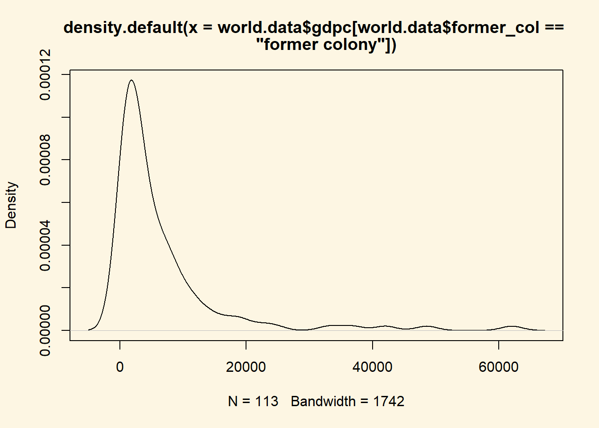

3.2 Solutions
3.2.0.1 Exercise 2
Load the world.data dataset from your disk.
world.data <- read.csv("QoG2012.csv")3.2.0.2 Exercise 3
Rename the variable wdi_gdpc into gdpc.
# to see all variable names
names(world.data)[1] "h_j" "wdi_gdpc" "undp_hdi" "wbgi_cce" "wbgi_pse"
[6] "former_col" "lp_lat_abst"# wdi_gdpc is the second variable. We rename the second element of the names vector
names(world.data)[2] <- "gdpc"3.2.0.3 Exercise 4
Delete missing values from gdpc.
# to check whether there are any missings or not
summary(world.data$gdpc) Min. 1st Qu. Median Mean 3rd Qu. Max. NA's
226.2 1768.0 5326.1 10184.1 12976.5 63686.7 16 # we have missings, let's make a copy of world.data before deleting
full.world.data <- world.data
# now let's delete the 16 rows with missings on gdpc
world.data <- world.data[ which(!is.na(world.data$gdpc)) , ]3.2.0.4 Exercise 5
Inspect former_col and delete missing values from it.
# we instpect the variable and check for missings
summary(world.data$former_col) Min. 1st Qu. Median Mean 3rd Qu. Max.
0.0000 0.0000 1.0000 0.6348 1.0000 1.0000 # there are none, so there is nothing to delete3.2.0.5 Exercise 6
Turn former_col into a factor variable with the appropriate labels.
# we check the current storage type
str(world.data$former_col) int [1:178] 0 0 1 1 1 0 1 0 0 1 ...# it's numeric, so we change it to nominal
world.data$former_col <- factor(world.data$former_col,
levels = c(0,1),
labels = c("not colonised", "former colony" ))
# let's check the results
table(world.data$former_col)
not colonised former colony
65 113 Wait a minute. Is there something wrong here? The mean of the variable is 0.63. That means 63 percent of all countries are former colonies. Let’s check whether we got that.
table(world.data$former_col) / sum(table(world.data$former_col))
not colonised former colony
0.3651685 0.6348315 Ah, that’s correct. It’s good to make sure, we did not mess up the re-coding.
3.2.0.6 Exercise 8.
Compute the probability that a county is richer than 55 000 per capita.
Wealth is never normally distributed. We don’t even need to check. We use the ecdf() function for the empirical cumulative distribution.
The probability that a country is richer than 55 000 is 1 minus the cumulative probability of 55000.
# get the empirical cumulative distribution of wealth
c.dist.of.wealth <- ecdf(world.data$gdpc)
# the prob
1 - c.dist.of.wealth(55000)[1] 0.01123596The probability is 0.01. Put differently 1 percent of countries is richer than 55 000 US dollars per capita.
3.2.0.7 Exercise 8
Compute the same probability given that a country is a former colony.
The approach is similar but we want the conditional cumulative distribution, where the condition is that a country is a former colony.
# conditional cumulative distribution
c.dist.of.wealth2 <- ecdf(world.data$gdpc[world.data$former_col == "former colony"])
1 - c.dist.of.wealth2(55000)[1] 0.008849558The probability is 0.009. The probability that a former colony is that rich is slightly lower than that any country is.
3.2.0.8 Exercise 9
Compute the conditional expectation of wealth (gdp per capita) for a former colony.
The conditional expectation is the mean of wealth among all former colonies. We know how to do this from last week. We take the mean of wealth and subset using square brackets.
mean( world.data$gdpc[world.data$former_col == "former colony"] )[1] 6599.714The conditional expectation of wealth for former colonies is 6600 US dollars per capita.
3.2.0.9 Exercise 10
Compute the conditional expectation of wealth for a country that is not a former colony.
mean( world.data$gdpc[world.data$former_col == "not colonised"] )[1] 16415.39The corresponding expectation for countries that have not been a colony is 16415 US dollars.
3.2.0.10 Exercise 11
What is the probability that a former colony is 2 standard deviations below the mean wealth level?
We first find out what a standard deviation of wealth is in the conditional distribution of wealth for former colonies.
# standard deviation of wealth for former colonies
sd.wealth.cols <- sd(world.data$gdpc[world.data$former_col == "former colony"])
sd.wealth.cols[1] 9783.914Interesting, the standard deviation is greater than the mean. Apparently, former colonies are very different. Some do poorly and some extremely well.
Doesn’t this pose a problem for the task though? How can a country’s wealth be 2 standard deviations below the mean if the mean is smaller than the standard deviation?
Well, that’s not possible. Negative wealth does not exist. Consequently, that probability is 0.
3.2.0.11 Exercise 12
We get the standard deviation of the wealth distribution of countries that have not been colonised.
# standard deviation of wealth for not former colonies
sd.wealth.not.cols <- sd(world.data$gdpc[world.data$former_col == "not colonised"])The result is similar to exercise 11. The mean is 16 415 and the standard deviation is 13 766. 2 standard deviations below the mean would be negative. The probability of that is 0.
3.2.0.12 Exercise 13
Compute the probability that a former colony is the wealth interval from 25 000 to 31 000.
We compute the cumulative probabilities that a country has 31 000 and 25 000 and then take the difference.
# cumulative probability of 31 000
p1 <- c.dist.of.wealth2(31000)
# cumulative probability of 25 000
p2 <- c.dist.of.wealth2(25000)
# probability of country in the interval
p1 - p2[1] 0The answer is again: 0. Let’s have a look at the distribution to see what’s going on there.
plot(density( world.data$gdpc[world.data$former_col == "former colony"] ))
It seems like there are no countries in that interval. Let’s check:
# let's look at summary stats first
summary(world.data$gdpc[ world.data$former_col == "former colony" ]) Min. 1st Qu. Median Mean 3rd Qu. Max.
226.2 1263.7 3157.5 6599.7 7938.3 62005.6 # so there is at least 1 country that is richer. Let's look at all
# countries that are former colonies and also richer than 25 000
world.data[which( world.data$gdpc > 25000 & world.data$former_col == "former colony"), ] h_j gdpc undp_hdi wbgi_cce wbgi_pse former_col lp_lat_abst
24 0 48585.73 0.867 0.3304393 0.99980551 former colony 0.0477778
92 1 33079.87 0.838 1.0835209 -0.02684768 former colony 0.3255555
142 0 62005.56 0.833 0.9734111 0.76874268 former colony 0.2811111
156 1 36732.23 0.902 2.3715818 1.34370053 former colony 0.0135556
175 0 42004.04 0.824 1.0449655 0.80680293 former colony 0.2666667That’s it. There are exactly zero countries in that interval.
Sub-setting with 2 conditions in square brackets may be new to you. We did that with & operator which means “and”.
3.2.0.13 Exercise 14
Compute the probability that a not former colony is in the top 2.5 percent of the wealth distribution.
We find the value first. The top 2.5 percent are in the 97.5 percentile of the distribution. We use the quantile() function to get the value of the 97.5th percentile.
rich.countries <- quantile(world.data$gdpc[ world.data$former_col == "not colonised"], .975)
rich.countries 97.5%
41447.31 The value that puts a country in the top 2.5 percent of the conditional wealth distribution (where the condition is that a country was not colonised) is 41447 US dollars.
We now take the empirical cumulative distribution and get the probability of being richer.
# conditional cumulative distribution
c.dist.of.wealth3 <- ecdf(world.data$gdpc[world.data$former_col == "not colonised"])
# conditional probability of being in the top 2.5 percent of not colonised countries
1 - c.dist.of.wealth3(rich.countries)[1] 0.03076923The probability is 0.03.
3.2.0.14 Exercise 15
At which wealth level is a country in the bottom 2.5 percent of the wealth distribution?
The question asks for the wealth level that puts a country in the bottom 2.5 percent independent of whether it was a colony or not. The quantile() function returns that value.
quantile( world.data$gdpc, .025 ) 2.5%
526.8697 At 527 US dollars per capita, a country is in the bottom 2.5 percent of the wealth distribution.